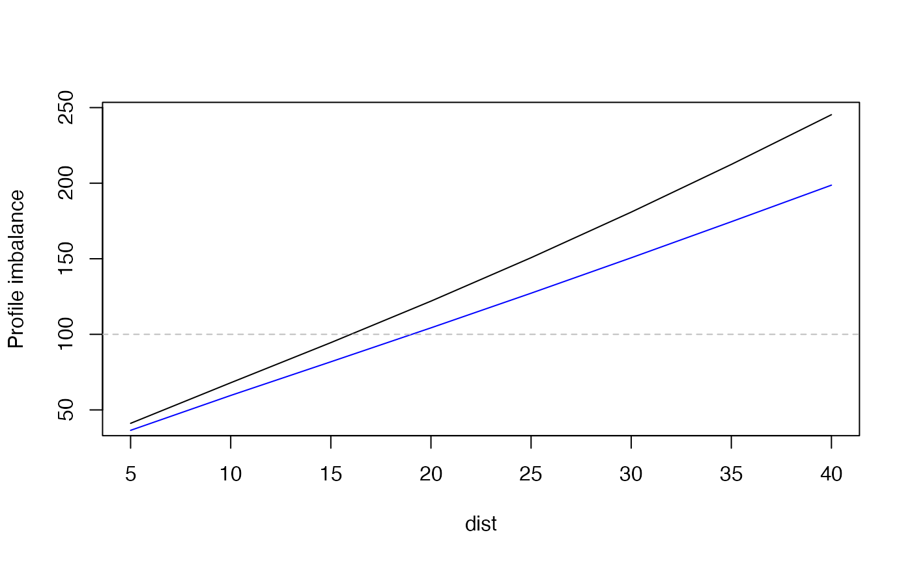

Family of functions that serve a purpose of probing sprint or force-velocity profile. This is done by increasing individual sprint parameter for a percentage and calculating which parameter improvement yield biggest deduction in sprint tim
probe_FV "probes" F0 and V0 and calculates which one
improves sprint time for a defined distance
probe_MSS_MAC "probes" MSS and MAC and calculates which one
improves sprint time for a defined distance
probe_FV(
distance,
F0,
V0,
bodymass = 75,
inertia = 0,
resistance = 0,
perc = 2.5,
...
)
probe_MSS_MAC(distance, MSS, MAC, perc = 2.5)Numeric vector
Numeric vectors. FV profile parameters
Body mass in kg
External inertia in kg (for example a weight vest, or a sled). Not included in the air resistance calculation
External horizontal resistance in Newtons (for example tether device or a sled friction resistance)
Numeric vector. Probing percentage. Default is 2.5 percent
Forwarded to predict_power_at_distance for the purpose of calculation of air resistance
Numeric vectors. Model parameters
probe_FV returns a data frame with the following columns
Original F0
Original F0
Bodymass
Inertia
Resistance
Maximal power estimated using F0 * V0 / 4
Relative maximal power
FV profile slope
Distance
Time to cover distance
Probe percentage
Probing F0
Predicted time for distance when F0 is probed
Difference in time to cover distance between time_optimal and time
Probing V0
Predicted time for distance when V0 is probed
Difference in time to cover distance between time_optimal and time
Percent ratio between V0_probe_time_gain and F0_probe_time_gain
probe_MSS_MAC returns a data frame with the following columns
Original MSS
Original MAC
Relative maximal power estimated using MSS * MAC / 4
Sprint profile slope
Distance
Time to cover distance
Probe percentage
Probing MSS
Predicted time for distance when MSS is probed
Difference in time to cover distance between probe time and time
Probing MAC
Predicted time for distance when MAC is probed
Difference in time to cover distance between probing time and time
Percent ratio between MSS_probe_time_gain and MAC_probe_time_gain
MSS <- 10
MAC <- 8
bodymass <- 75
fv <- make_FV_profile(MSS, MAC, bodymass)
dist <- seq(5, 40, by = 5)
probe_MSS_MAC_profile <- probe_MSS_MAC(
distance = dist,
MSS,
MAC
)[["profile_imb"]]
probe_FV_profile <- probe_FV(
distance = dist,
fv$F0,
fv$V0,
fv$bodymass
)[["profile_imb"]]
plot(x = dist, y = probe_MSS_MAC_profile, type = "l", ylab = "Profile imbalance")
lines(x = dist, y = probe_FV_profile, type = "l", col = "blue")
abline(h = 100, col = "gray", lty = 2)
